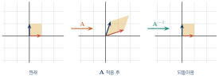
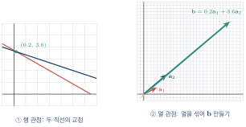
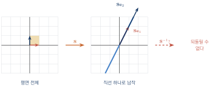
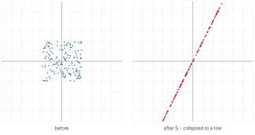
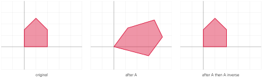
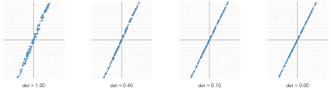
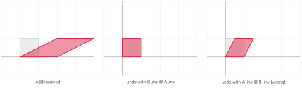

역행렬: 되돌리는 변환
이 장을 마치면
실수에서 \(3x = 12\)를 풀 때 우리는 양변에 \(3\)의 역수 \(\frac{1}{3}\)을 곱한다. \(3 \times \frac{1}{3} = 1\)이고, 1은 곱셈의 항등원이므로 \(x\)만 남는다.
행렬 방정식 \(\mm{A}\vv{x} = \vv{b}\)도 같은 방식으로 풀 수 있을까? 그러려면 두 가지가 필요하다. 곱셈의 항등원 역할을 하는 행렬과, 어떤 행렬에 곱했을 때 그 항등원이 되는 "역수 행렬"이다. 전자는 이미 알고 있는 단위행렬이고, 후자가 이 장의 주인공인 역행렬이다.
그런데 실수와 결정적으로 다른 점이 하나 있다. 0을 제외한 모든 실수에는 역수가 있지만, 영행렬이 아닌데도 역행렬이 없는 행렬이 얼마든지 있다. 이 사실이 선형대수를 흥미롭게 만든다. 그리고 그 이유는 계산이 아니라 그림으로 이해하는 것이 훨씬 빠르다.
6.1 행렬의 곱셈과 항등행렬
아무것도 하지 않는 변환
단위행렬 \(\Id\)는 대각성분이 모두 1이고 나머지가 0인 정방행렬이다. 이 행렬을 어떤 행렬에 곱해도 원래 행렬이 그대로 나온다.
계산으로 확인하는 것은 쉽지만, 왜 그런지를 5장의 관점으로 보면 훨씬 명쾌하다. 단위행렬의 각 열은 표준기저벡터이므로,
즉 \(\Id\)는 기저벡터를 제자리에 그대로 두는 변환이다. 기저가 움직이지 않으면 아무 벡터도 움직이지 않는다. 단위행렬은 "아무것도 하지 않기"라는 변환인 셈이다.
\(\mm{A} = \mtwo{2}{3}{4}{5}\)에 대하여 \(\mm{A}\Id_2\)를 계산하시오.
import numpy as np
A = np.array([[2., 3.], [4., 5.]])
I = np.eye(2)
print('A @ I == A :', np.allclose(A @ I, A))
print('I @ A == A :', np.allclose(I @ A, A))
print('I가 기저를 그대로 두는가 :', np.allclose(I @ np.eye(2), np.eye(2)))A @ I == A : True I @ A == A : True I가 기저를 그대로 두는가 : True
5장에서 행렬 곱은 교환법칙을 만족하지 않는다고 배웠다. 그런데 식 \(\eqref{eq:ch06_identity}\)은 \(\mm{A}\Id = \Id\mm{A}\)라고 말한다. 단위행렬은 어떤 행렬과도 자리를 바꿀 수 있는 특별한 행렬이다. 사실 모든 행렬과 교환되는 행렬은 \(c\Id\) 꼴(스칼라 행렬)뿐임이 알려져 있다.
"나누기"를 만들어 내기
이제 본론이다. \(\mm{A}\vv{x} = \vv{b}\)에서 \(\vv{x}\)를 구하고 싶다. 실수라면 양변을 \(a\)로 나누면 되지만, 행렬에는 나눗셈이 없다. 대신 다음을 만족하는 행렬을 찾을 수 있다면 문제가 풀린다.
이런 \(\mm{A}\inv\)가 있다면 \(\mm{A}\vv{x} = \vv{b}\)의 양변 왼쪽에 곱해서
를 얻는다. 이것이 역행렬을 도입하는 이유다.
행렬 곱은 교환법칙이 성립하지 않으므로 양변의 같은 쪽에 곱해야 한다. \(\mm{A}\vv{x} = \vv{b}\)에서는 왼쪽에 곱한다. 오른쪽에 곱하면 \(\mm{A}\vv{x}\mm{A}\inv\)이 되어 크기부터 맞지 않는다.
변환의 관점에서 본 역행렬
5장의 관점으로 다시 보자. \(\mm{A}\)가 평면을 어떤 식으로 일그러뜨렸다면, \(\mm{A}\inv\)는 그 일그러짐을 정확히 되돌리는 변환이다.

이 그림에서 자연스러운 질문이 나온다. 되돌릴 수 없는 변환도 있지 않을까? 있다. 평면 전체를 하나의 직선 위로 납작하게 눌러 버리는 변환을 생각해 보자. 한번 눌리고 나면 원래 어디에 있었는지 알 방법이 없다. 이런 변환에는 역행렬이 없다. 6.4절에서 자세히 다룬다.
6.2 역행렬과 역행렬의 성질
역행렬의 정의
정방행렬 \(\mm{A} \in \Rmat{n}{n}\)에 대하여
역행렬이 존재하지 않는 행렬은 특이행렬singular matrix이라 한다.
정의에서 두 가지를 짚어 두자. 첫째, 역행렬은 정방행렬에 대해서만 정의된다. 직사각형 행렬에는 역행렬이 없다(다만 12장에서 배울 유사 역행렬이 그 역할을 대신한다). 둘째, 역행렬이 존재한다면 그것은 유일하다.
\(\mm{A}\)의 역행렬이 존재하면 그것은 유일하다.
증명은 간단하다. \(\mm{B}\)와 \(\mm{C}\)가 모두 \(\mm{A}\)의 역행렬이라 하면
\(2\times2\) 역행렬 공식
\(2\times2\) 행렬의 역행렬에는 외워 둘 만한 간단한 공식이 있다.
\(\mm{A} = \mtwo{a}{b}{c}{d}\)에 대하여 \(ad - bc \neq 0\)이면 \(\mm{A}\)는 가역이고
식 \(\eqref{eq:ch06_inv2x2}\)의 구조를 기억하는 요령이 있다. 주대각선의 두 값을 서로 바꾸고, 반대각선의 두 값에는 마이너스를 붙인 뒤, 전체를 \(ad-bc\)로 나눈다.
여기서 등장한 \(ad-bc\)가 바로 행렬식determinant이며 \(\det(\mm{A})\)로 쓴다. 7장 전체가 이 값의 이야기다. 지금은 "이 값이 0이면 역행렬이 없다"는 사실만 기억하자.
\(\mm{A} = \mtwo{4}{7}{2}{6}\)의 역행렬을 구하시오.
import numpy as np
A = np.array([[4., 7.],
[2., 6.]])
Ainv = np.linalg.inv(A)
print('A inverse =\n', Ainv)
print('A @ Ainv =\n', np.round(A @ Ainv, 10))
print('det(A) =', np.linalg.det(A))
# 공식대로 직접 계산
a, b, c, d = A.flatten()
formula = np.array([[d, -b], [-c, a]]) / (a * d - b * c)
print('공식과 일치 :', np.allclose(formula, Ainv))A inverse = [[ 0.6 -0.7] [-0.2 0.4]] A @ Ainv = [[ 1. -0.] [ 0. 1.]] det(A) = 10.000000000000002 공식과 일치 : True
역행렬의 성질
\(\mm{A}, \mm{B}\)가 같은 크기의 가역행렬이고 \(c \neq 0\)일 때
(2)가 가장 중요하고 또 가장 헷갈린다. 전치와 마찬가지로 순서가 뒤집힌다. 이유는 변환의 관점에서 보면 명백하다. \(\mm{A}\mm{B}\)는 "\(\mm{B}\)를 먼저, \(\mm{A}\)를 나중에" 적용하는 변환이다. 이것을 되돌리려면 나중에 한 것부터 되돌려야 한다. 양말을 신고 신발을 신었다면, 벗을 때는 신발을 먼저 벗어야 하는 것과 같다.
import numpy as np
rng = np.random.default_rng(42)
A = rng.normal(0, 1, (3, 3))
B = rng.normal(0, 1, (3, 3))
print('(1) :', np.allclose(np.linalg.inv(np.linalg.inv(A)), A))
print('(2) :', np.allclose(np.linalg.inv(A @ B),
np.linalg.inv(B) @ np.linalg.inv(A)))
print('(2) 틀린 순서 :', np.allclose(np.linalg.inv(A @ B),
np.linalg.inv(A) @ np.linalg.inv(B)))
print('(3) :', np.allclose(np.linalg.inv(A.T), np.linalg.inv(A).T))
print('(5) :', np.isclose(np.linalg.det(np.linalg.inv(A)),
1 / np.linalg.det(A)))(1) : True (2) : True (2) 틀린 순서 : False (3) : True (5) : True
특별한 행렬의 역행렬
몇몇 행렬은 역행렬을 눈으로 구할 수 있다.
| 행렬 | 역행렬 | 조건 |
|---|---|---|
| 단위행렬 \(\Id\) | \(\Id\) | 언제나 |
| 대각행렬 \(\diag(d_1,\dots,d_n)\) | \(\diag(1/d_1,\dots,1/d_n)\) | 모든 \(d_i \neq 0\) |
| 회전행렬 \(\mm{R}(\theta)\) | \(\mm{R}(-\theta) = \mm{R}\tp\) | 언제나 |
| 직교행렬 \(\mm{Q}\) | \(\mm{Q}\tp\) | 언제나 |
특히 마지막 줄이 놀랍다. 직교행렬orthogonal matrix은 열벡터들이 서로 직교하는 단위벡터인 행렬인데, 이런 행렬의 역행렬은 그냥 전치다. 계산이 필요 없다. 회전행렬이 그 대표적인 예이며, 이 성질은 11장의 특이값 분해와 12장의 QR 분해에서 핵심적으로 쓰인다.
import numpy as np
D = np.diag([2., 5., 0.5])
print('대각행렬의 역행렬:\n', np.linalg.inv(D))
t = np.radians(37)
R = np.array([[np.cos(t), -np.sin(t)],
[np.sin(t), np.cos(t)]])
print('R inv == R.T :', np.allclose(np.linalg.inv(R), R.T))
print('R @ R.T :\n', np.round(R @ R.T, 10))대각행렬의 역행렬: [[0.5 0. 0. ] [0. 0.2 0. ] [0. 0. 2. ]] R inv == R.T : True R @ R.T : [[1. 0.] [0. 1.]]
- \(\mm{A}\mm{A}\inv = \mm{A}\inv\mm{A} = \Id\)이며, 역행렬은 존재한다면 유일하다.
- \(2\times2\)의 경우 \(\mm{A}\inv = \frac{1}{ad-bc}\mtwo{d}{-b}{-c}{a}\)이고, \(ad-bc = \det(\mm{A}) = 0\)이면 역행렬이 없다.
- \((\mm{A}\mm{B})\inv = \mm{B}\inv\mm{A}\inv\) — 나중에 한 변환부터 되돌린다.
- 대각행렬의 역행렬은 성분의 역수, 직교행렬의 역행렬은 전치다.
6.3 역행렬을 이용한 선형방정식 풀이
연립방정식을 행렬로 적기
중학교에서 배운 연립방정식을 다시 꺼내 보자.
이것을 행렬로 적으면 어떻게 될까? 미지수를 벡터로 묶고, 계수를 행렬로 묶으면 된다.
행렬 곱의 정의를 적용해 보면 첫 행에서 \(4x + 7y = 26\), 둘째 행에서 \(2x + 6y = 22\)가 정확히 복원된다. 즉 연립일차방정식은 언제나 \(\mm{A}\vv{x} = \vv{b}\) 꼴로 적을 수 있다. 방정식의 개수가 행의 수, 미지수의 개수가 열의 수가 된다.
| 부르는 이름 | 정체 |
|---|---|
| 계수행렬coefficient matrix \(\mm{A}\) | 미지수 앞에 붙은 숫자들 |
| 미지수 벡터 \(\vv{x}\) | 우리가 구하려는 값 |
| 상수 벡터 \(\vv{b}\) | 등호 오른쪽의 값들 |
역행렬로 풀기
\(\mm{A}\)가 가역이면 해는 즉시 나온다.
위 연립방정식을 역행렬로 푸시오.
import numpy as np
A = np.array([[4., 7.],
[2., 6.]])
b = np.array([26., 22.])
x1 = np.linalg.inv(A) @ b # 역행렬을 곱하는 방법
x2 = np.linalg.solve(A, b) # 전용 함수 (권장)
print('inv 방식 :', x1)
print('solve 방식 :', x2)
print('검산 A @ x :', A @ x2)inv 방식 : [0.2 3.6] solve 방식 : [0.2 3.6] 검산 A @ x : [26. 22.]
실무에서는 np.linalg.inv(A) @ b보다 np.linalg.solve(A, b)를 써야 한다. 두 가지 이유가 있다.
- 정확도 역행렬을 명시적으로 구하는 과정에서 반올림 오차가 누적된다.
solve는 역행렬을 만들지 않고 바로 해를 구하므로 더 정확하다. - 속도 역행렬을 구하는 비용이 방정식을 푸는 비용보다 크다. \(n\)이 커질수록 차이가 벌어진다.
inv는 쓰지 말자. 이 책에서는 개념을 보이기 위해 inv를 자주 쓰지만, 실전 코드에서는 solve가 정답이다.해를 그림으로 보기
2차원 연립방정식은 두 직선의 교점을 찾는 문제다. 이 익숙한 그림과 5장에서 배운 "열의 선형결합" 관점을 나란히 놓아 보자.
import numpy as np
from tuvis import *
A = np.array([[4., 7.], [2., 6.]])
b = np.array([26., 22.])
x = np.linalg.solve(A, b)
fig, (ax1, ax2) = new_axes(xlim=(-2, 28), ylim=(-2, 26), ncols=2)
# ① 행 관점: 두 직선의 교점
t = np.linspace(-2, 8, 100)
draw_curve(ax1, t, (26 - 4 * t) / 7, color='royalblue', label='4x + 7y = 26')
draw_curve(ax1, t, (22 - 2 * t) / 6, color='seagreen', label='2x + 6y = 22')
draw_points(ax1, x.reshape(1, 2), color='crimson', size=8)
ax1.set_title('row view: two lines meet')
# ② 열 관점: 열벡터를 섞어 b를 만들기
draw_vector(ax2, A[:, 0], color='crimson', label='a1')
draw_vector(ax2, A[:, 1], color='royalblue', label='a2')
draw_vector(ax2, x[0] * A[:, 0], color='lightcoral', width=0.008)
draw_vector(ax2, x[1] * A[:, 1], origin=x[0] * A[:, 0],
color='lightskyblue', width=0.008)
draw_vector(ax2, b, color='seagreen', label='b')
ax2.set_title('column view: mix the columns')
print('해 :', x)
fig.show()
두 그림 모두 같은 답 \((0.2, 3.6)\)을 준다. 그러나 강조하는 바가 다르다. 행 관점은 "각 방정식이 하나의 직선"이라고 보고, 열 관점은 "열벡터를 얼마씩 섞어야 \(\vv{b}\)가 되는가"를 묻는다. 미지수가 셋 이상이 되면 행 관점(평면들의 교선)은 그리기 어려워지지만, 열 관점은 여전히 "몇 개의 벡터를 섞어 목표를 만드는 문제"로 남는다. 그래서 8장부터는 열 관점이 주가 된다.
미지수가 많아지면
같은 방법이 차원과 무관하게 그대로 작동한다. 미지수 4개짜리 연립방정식을 풀어 보자.
import numpy as np
A = np.array([[ 2., 1., -1., 3.],
[ 1., 3., 2., -1.],
[-1., 2., 4., 1.],
[ 3., 1., 0., 2.]])
b = np.array([10., 5., 8., 12.])
x = np.linalg.solve(A, b)
print('해 :', np.round(x, 6))
print('검산 :', np.allclose(A @ x, b))
print('잔차norm:', np.linalg.norm(A @ x - b))해 : [2.384615 0.384615 1.846154 2.230769] 검산 : True 잔차norm: 1.7763568394002505e-15
잔차의 크기가 \(10^{-15}\) 수준이다. 정확히 0은 아니지만 이것이 부동소수점 계산의 한계이며, 사실상 정확한 해로 보아도 좋다. 항상 검산하는 습관을 들이자. np.allclose(A @ x, b) 한 줄이면 된다.
데이터에 가장 잘 맞는 직선 \(y = wx + b\)를 찾는 문제를 생각해 보자. 데이터가 두 점뿐이라면 미지수 2개, 방정식 2개이므로 이 장의 방법으로 정확히 풀린다.
그런데 데이터가 100개라면? 방정식이 100개, 미지수는 여전히 2개다. 이런 경우 대개 모든 방정식을 동시에 만족하는 해는 없다. 그렇다고 포기할 수는 없으므로 "가장 덜 틀린 답"을 찾게 되는데, 그것이 12장의 최소제곱법이다. 그리고 그 해법의 중심에도 역행렬이 있다.
6.4 역행렬이 없다는 것의 의미
납작해지는 변환
다음 행렬을 보자.
\(ad - bc = 1\cdot4 - 2\cdot2 = 0\)이므로 역행렬이 없다. 왜 없을까? 이 행렬이 평면에 무슨 짓을 하는지 그려 보면 즉시 알 수 있다.
\(\mm{S}\)의 두 열은 \((1,2)\)와 \((2,4)\)인데, 둘째 열이 첫째 열의 정확히 두 배다. 즉 두 기저벡터가 같은 직선 위로 옮겨진다. 5장에서 배웠듯 나머지 모든 벡터는 이 둘의 조합이므로, 평면 전체가 그 직선 하나로 눌려 버린다.

한번 눌리고 나면 되돌릴 방법이 없다. 예를 들어 \((1,0)\)과 \((-1,1)\)은 둘 다 \(\mm{S}\)에 의해 각각 \((1,2)\)와 \((1,2)\)로 간다. 서로 다른 두 점이 같은 곳에 도착했으니, 도착점만 보고 출발점을 알아낼 방법이 없는 것이다.
import numpy as np
from tuvis import *
S = np.array([[1., 2.],
[2., 4.]])
print('det(S) :', np.linalg.det(S))
print('S @ (1, 0) :', S @ np.array([1., 0.]))
print('S @ (-1, 1) :', S @ np.array([-1., 1.])) # 다른 입력, 같은 출력?
fig, (ax1, ax2) = new_axes(xlim=(-6, 6), ylim=(-6, 6), ncols=2)
rng = np.random.default_rng(0)
P = rng.uniform(-2, 2, (300, 2)) # 무작위 점 300개
draw_points(ax1, P, color='steelblue', s=8)
ax1.set_title('before')
draw_points(ax2, transform(S, P), color='crimson', s=8)
ax2.set_title('after S : collapsed to a line')
fig.show()det(S) : 0.0 S @ (1, 0) : [1. 2.] S @ (-1, 1) : [1. 2.]
>!

300개의 점이 흩어져 있었는데, \(\mm{S}\)를 적용하고 나면 모두 한 직선 위에 늘어선다. 정보가 사라진 것이다. 이것이 역행렬이 없다는 말의 기하학적 의미다.
역행렬이 없다 = 변환이 차원을 무너뜨린다 = 서로 다른 입력이 같은 출력으로 간다 = 정보가 사라진다. 이 네 문장은 모두 같은 말이다.
역행렬이 없으면 방정식은 어떻게 되는가
\(\mm{A}\)가 특이행렬이면 \(\mm{A}\vv{x} = \vv{b}\)는 어떻게 될까? 두 가지 경우가 있다.
| \(\vv{b}\)의 위치 | 해의 상황 |
|---|---|
| 납작해진 직선 위에 있음 | 해가 무수히 많다 (그 직선으로 가는 점이 여럿) |
| 직선 밖에 있음 | 해가 없다 (도달할 수 없는 곳) |
5장의 열 관점으로 말하면 이렇다. \(\mm{A}\)의 열들이 만들어 낼 수 있는 벡터의 집합(이것을 열공간column space이라 하며 8장에서 다룬다)이 직선 하나뿐이므로, \(\vv{b}\)가 그 직선 위에 있으면 만들 수 있고 아니면 만들 수 없다.
import numpy as np
S = np.array([[1., 2.],
[2., 4.]])
b_on = np.array([3., 6.]) # (1,2)의 3배 -> 직선 위
b_off = np.array([1., 5.]) # 직선 밖
for name, b in [('직선 위', b_on), ('직선 밖', b_off)]:
try:
x = np.linalg.solve(S, b)
print(name, '-> 해 :', x)
except np.linalg.LinAlgError as e:
print(name, '-> 오류 :', e)직선 위 -> 오류 : Singular matrix 직선 밖 -> 오류 : Singular matrix
solve를 쓰면 오류가 난다np.linalg.solve()는 유일한 해를 구하는 함수이므로, 해가 없든 무수히 많든 똑같이 오류를 낸다. 두 경우를 구별하고 해집합 전체를 구하려면 8장의 소거법이 필요하다.
현실의 데이터에서는 행렬식이 정확히 0인 경우보다 0에 아주 가까운 경우가 더 위험하다. 이런 행렬을 불량조건ill-conditioned 행렬이라 하는데, 역행렬은 존재하지만 입력이 조금만 바뀌어도 해가 크게 요동친다. 다음 예를 보자.
A = np.array([[1., 1.], [1., 1.0001]])
print('det :', np.linalg.det(A))
print('해 1:', np.linalg.solve(A, [2., 2.0001]))
print('해 2:', np.linalg.solve(A, [2., 2.0002])) # b를 아주 조금만 바꿈det : 9.99999999999889e-05 해 1: [1. 1.] 해 2: [2.22044605e-16 2.00000000e+00]\(\vv{b}\)의 둘째 성분을 0.0001만큼 바꿨을 뿐인데 해가 \((1,1)\)에서 \((0,2)\)로 완전히 달라졌다. 측정 오차가 있는 실제 데이터에서 이런 행렬을 만나면 결과를 믿을 수 없다. 이 민감도를 재는 척도가 조건수condition number이며 11장에서 다룬다.
가역행렬의 여러 얼굴
\(\mm{A}\)가 가역이라는 조건은 여러 가지 서로 다른 진술과 동치다. 지금은 다 이해하지 못해도 좋다. 이 책을 마칠 무렵 이 표의 모든 줄이 같은 말임을 알게 될 것이다.
| \(\mm{A} \in \Rmat{n}{n}\)에 대해 다음은 모두 동치이다 | 다루는 장 | |
|---|---|---|
| 1 | \(\mm{A}\)가 가역이다 (\(\mm{A}\inv\)이 존재한다) | 6장 |
| 2 | \(\det(\mm{A}) \neq 0\) | 7장 |
| 3 | \(\mm{A}\vv{x} = \vv{b}\)가 모든 \(\vv{b}\)에 대해 유일한 해를 가진다 | 6, 8장 |
| 4 | \(\mm{A}\vv{x} = \zerovec\)의 해가 \(\vv{x} = \zerovec\)뿐이다 | 8장 |
| 5 | \(\mm{A}\)의 열벡터들이 일차독립이다 | 8장 |
| 6 | \(\rank(\mm{A}) = n\) (계수가 최대다) | 8장 |
| 7 | \(\mm{A}\)의 열들이 \(\Rsp{n}\) 전체를 생성한다 | 8장 |
| 8 | \(\mm{A}\)의 고유값 중 0이 없다 | 9장 |
| 9 | \(\mm{A}\)의 특이값이 모두 0보다 크다 | 11장 |
이 표를 가역행렬 정리라고 부른다. 아홉 개의 문장이 전부 "이 변환은 되돌릴 수 있다"는 하나의 사실을 서로 다른 언어로 말하고 있을 뿐이다. 선형대수를 공부한다는 것은 이 표의 줄들이 왜 같은 말인지 하나씩 이해해 가는 과정이라고 해도 지나치지 않다.
import numpy as np
def report(A, name):
det = np.linalg.det(A)
rank = np.linalg.matrix_rank(A)
print(f'{name}: det={det:8.4f}, rank={rank}, '
f'invertible={not np.isclose(det, 0)}')
report(np.array([[4., 7.], [2., 6.]]), 'A ')
report(np.array([[1., 2.], [2., 4.]]), 'S ')
report(np.eye(3), 'I3 ')
report(np.array([[1., 2., 3.], [4., 5., 6.], [7., 8., 9.]]), 'M ')A : det= 10.0000, rank=2, invertible=True S : det= 0.0000, rank=1, invertible=False I3 : det= 1.0000, rank=3, invertible=True M : det= -0.0000, rank=2, invertible=False
마지막 행렬 \(\mm{M}\)이 흥미롭다. \(3\times3\)인데 랭크가 2다. 세 번째 행이 앞의 두 행으로 만들어지기 때문이다(\(\vv{r}_3 = 2\vv{r}_2 - \vv{r}_1\)). 3차원 공간을 평면으로 눌러 버리는 변환인 셈이다.
- \(2\times2\) 역행렬 함수를 직접 만들자. 공식 \(\eqref{eq:ch06_inv2x2}\)을 구현하고 넘파이의 결과와 비교하시오. 행렬식이 0이면 오류를 내도록 하시오.
import numpy as np def inv2x2(A): """2x2 행렬의 역행렬을 공식으로 구한다.""" (a, b), (c, d) = A det = a * d - b * c if np.isclose(det, 0): raise ValueError('특이행렬이므로 역행렬이 없습니다') return np.array([[d, -b], [-c, a]]) / det A = np.array([[4., 7.], [2., 6.]]) print(inv2x2(A)) print('넘파이와 일치 :', np.allclose(inv2x2(A), np.linalg.inv(A))) try: inv2x2(np.array([[1., 2.], [2., 4.]])) except ValueError as e: print('예상된 오류 :', e) - 역행렬로 방정식을 풀고 검산하자. 다음 연립방정식을 풀고 결과를 검산하시오.
\[ \begin{cases} 3x + 2y - z = 10 \\ x - y + 2z = -1 \\ 2x + 3y + z = 13 \end{cases} \]
import numpy as np A = np.array([[3., 2., -1.], [1., -1., 2.], [2., 3., 1.]]) b = np.array([10., -1., 13.]) x = np.linalg.solve(A, b) print('해 :', np.round(x, 6)) print('검산 :', np.allclose(A @ x, b)) print('det(A) :', np.linalg.det(A)) inv와solve의 속도를 비교하자. 크기가 다른 행렬에 대해 두 방법의 시간을 재고 정확도도 비교하시오.import numpy as np import time rng = np.random.default_rng(0) for n in [100, 500, 1000]: A = rng.normal(0, 1, (n, n)) + n * np.eye(n) # 잘 조건화된 행렬 b = rng.normal(0, 1, n) t0 = time.time(); x1 = np.linalg.inv(A) @ b; t1 = time.time() - t0 t0 = time.time(); x2 = np.linalg.solve(A, b); t2 = time.time() - t0 print(f'n={n:5d} inv:{t1:.4f}s solve:{t2:.4f}s ' f'err_inv={np.linalg.norm(A @ x1 - b):.2e} ' f'err_solve={np.linalg.norm(A @ x2 - b):.2e}')solve가 더 빠르면서 오차도 작다. 이것이 실무에서inv를 피하는 이유다.- 역행렬을 그림으로 확인하자. 어떤 행렬로 도형을 변환한 뒤 역행렬을 적용해 원래대로 돌아오는지 확인하시오.
import numpy as np from tuvis import * A = np.array([[1.5, 0.8], [-0.4, 1.1]]) Ainv = np.linalg.inv(A) house = np.array([[0., 0.], [2., 0.], [2., 1.5], [1., 2.5], [0., 1.5]]) fig, axes = new_axes(xlim=(-2, 5), ylim=(-2, 4), ncols=3) shapes = [house, transform(A, house), transform(Ainv, transform(A, house))] titles = ['original', 'after A', 'after A then A inverse'] for ax, P, t in zip(axes, shapes, titles): draw_polygon(ax, P, color='crimson', alpha=0.45) ax.set_title(t, fontsize=10) print('완전히 복원되었는가 :', np.allclose(transform(Ainv, transform(A, house)), house)) fig.show()>!

- 특이행렬의 붕괴를 관찰하자. 행렬식이 점점 0에 가까워질 때 무작위 점들이 어떻게 되는지 살펴보시오.
import numpy as np from tuvis import * rng = np.random.default_rng(1) P = rng.uniform(-2, 2, (400, 2)) fig, axes = new_axes(xlim=(-8, 8), ylim=(-10, 10), ncols=4) for ax, eps in zip(axes, [1.0, 0.4, 0.1, 0.0]): A = np.array([[1., 2.], [2., 4. + eps]]) draw_points(ax, transform(A, P), color='steelblue', s=5) ax.set_title(f'det = {np.linalg.det(A):.2f}', fontsize=10) fig.show()>!

행렬식이 0에 가까워질수록 점 구름이 점점 납작해지다가, 0이 되는 순간 완전히 직선이 된다. 행렬식은 "얼마나 납작한가"를 재는 값이라는 7장의 주제가 여기서 미리 드러난다.
- 역행렬의 순서 규칙을 확인하자. \((\mm{A}\mm{B})\inv = \mm{B}\inv\mm{A}\inv\)임을 확인하고, 순서를 지킨 \(\mm{A}\inv\mm{B}\inv\)는 왜 틀리는지 도형으로 보이시오.
import numpy as np from tuvis import * A = np.array([[2., 0.], [0., 1.]]) # 가로 2배 B = np.array([[1., 1.], [0., 1.]]) # 전단 shape = np.array([[0., 0.], [1., 0.], [1., 1.], [0., 1.]]) AB = A @ B correct = np.linalg.inv(B) @ np.linalg.inv(A) wrong = np.linalg.inv(A) @ np.linalg.inv(B) fig, axes = new_axes(xlim=(-1, 4), ylim=(-1, 3), ncols=3) for ax, M, t in [(axes[0], AB, 'A@B applied'), (axes[1], correct @ AB, 'undo with B_inv @ A_inv'), (axes[2], wrong @ AB, 'undo with A_inv @ B_inv (wrong)')]: draw_polygon(ax, shape, color='lightgray', alpha=0.4) draw_polygon(ax, transform(M, shape), color='crimson', alpha=0.45) ax.set_title(t, fontsize=9) fig.show()>!

- 직교행렬의 역행렬이 전치임을 확인하자. 여러 각도의 회전행렬에 대해 \(\mm{R}\inv = \mm{R}\tp\)를 검증하시오.
import numpy as np def rot(deg): t = np.radians(deg) return np.array([[np.cos(t), -np.sin(t)], [np.sin(t), np.cos(t)]]) for deg in [0, 30, 45, 90, 137, 250]: R = rot(deg) ok = np.allclose(np.linalg.inv(R), R.T) print(f'{deg:4d} deg : inv == T ? {ok}, det = {np.linalg.det(R):.6f}')회전행렬의 행렬식이 언제나 정확히 1인 점도 눈여겨보자. 회전은 넓이를 바꾸지 않는다는 뜻이며, 7장에서 그 의미가 밝혀진다.
6장 요약
- 단위행렬 \(\Id\)는 곱셈의 항등원이다(\(\mm{A}\Id = \Id\mm{A} = \mm{A}\)). 변환의 관점에서 \(\Id\)는 기저벡터를 제자리에 두는, 즉 아무것도 하지 않는 변환이다.
- 역행렬 \(\mm{A}\inv\)은 \(\mm{A}\mm{A}\inv = \mm{A}\inv\mm{A} = \Id\)을 만족하는 행렬이며, 존재한다면 유일하다. 역행렬이 있는 행렬을 가역행렬, 없는 행렬을 특이행렬이라 한다. 역행렬은 정방행렬에 대해서만 정의된다.
- \(2\times2\)의 경우 \(\mm{A}\inv = \dfrac{1}{ad-bc}\mtwo{d}{-b}{-c}{a}\)이다. 여기 등장하는 \(ad-bc\)가 행렬식이며, 이 값이 0이면 역행렬이 존재하지 않는다.
- 역행렬의 성질: \((\mm{A}\inv)\inv = \mm{A}\), \((\mm{A}\mm{B})\inv = \mm{B}\inv\mm{A}\inv\), \((\mm{A}\tp)\inv = (\mm{A}\inv)\tp\), \(\det(\mm{A}\inv) = 1/\det(\mm{A})\).
- \((\mm{A}\mm{B})\inv = \mm{B}\inv\mm{A}\inv\)에서 순서가 뒤바뀌는 이유는 변환을 되돌릴 때 나중에 한 것부터 되돌려야 하기 때문이다.
- 대각행렬의 역행렬은 각 성분의 역수이고, 직교행렬(회전행렬 포함)의 역행렬은 전치다. 계산 없이 얻을 수 있는 이 성질은 11–12장에서 결정적으로 쓰인다.
- 연립일차방정식은 언제나 \(\mm{A}\vv{x} = \vv{b}\) 꼴로 적을 수 있다. \(\mm{A}\)가 가역이면 해는 \(\vv{x} = \mm{A}\inv\vv{b}\)로 유일하게 결정된다.
- 실무에서는
np.linalg.inv(A) @ b가 아니라np.linalg.solve(A, b)를 써야 한다. 더 빠르고 오차도 작다. 그리고 항상np.allclose(A @ x, b)로 검산하자. - 연립방정식을 보는 두 관점: 행 관점은 여러 직선(평면)의 교점을 찾는 것이고, 열 관점은 열벡터를 섞어 \(\vv{b}\)를 만드는 비율을 찾는 것이다. 차원이 높아지면 열 관점이 훨씬 유용하다.
- 역행렬이 없다는 것은 변환이 차원을 무너뜨린다는 뜻이다. 평면이 직선으로 눌리면 서로 다른 점들이 같은 곳으로 가므로 되돌릴 수 없다. 정보가 사라진 것이다.
- \(\mm{A}\)가 특이행렬이면 \(\mm{A}\vv{x}=\vv{b}\)는 \(\vv{b}\)의 위치에 따라 해가 없거나 무수히 많다.
solve는 두 경우 모두Singular matrix오류를 낸다. - 행렬식이 0에 아주 가까운 불량조건 행렬은 실전에서 더 위험하다. 역행렬은 존재하지만 입력의 미세한 변화가 해를 크게 흔든다.
- 가역행렬 정리: "\(\mm{A}\)가 가역이다"는 "\(\det(\mm{A}) \neq 0\)", "\(\mm{A}\vv{x}=\zerovec\)의 해가 \(\zerovec\)뿐이다", "열벡터가 일차독립이다", "\(\rank(\mm{A})=n\)", "고유값에 0이 없다" 등과 모두 동치다. 이 책의 나머지 장은 이 동치들을 하나씩 밝히는 과정이다.
6장 연습문제
- ★ 다음 행렬의 역행렬을 공식으로 구하고, 존재하지 않으면 그 이유를 쓰시오.
- \(\mtwo{3}{1}{5}{2}\) (2) \(\mtwo{2}{4}{1}{2}\) (3) \(\mtwo{0}{1}{1}{0}\) (4) \(\mtwo{5}{0}{0}{2}\)
- ★ 문제 1의 결과를 넘파이로 확인하고, 각각 \(\mm{A}\mm{A}\inv = \Id\)인지 검산하시오.
- ★★ 다음 연립방정식을 (1) 손으로 소거하여, (2) 역행렬로, (3)
np.linalg.solve로 각각 풀고 결과를 비교하시오.\[ \begin{cases} 2x + 3y = 8 \\ 5x - y = 3 \end{cases} \] - ★★ \(\mm{A}\vv{x} = \vv{b}\)의 양변에 \(\mm{A}\inv\)을 곱할 때 왜 반드시 왼쪽에 곱해야 하는지 설명하시오. 오른쪽에 곱하면 어떤 문제가 생기는가?
- ★★ \((\mm{A}\mm{B})\inv = \mm{B}\inv\mm{A}\inv\)임을 정의를 이용해 증명하시오.
- ★★ 대각행렬 \(\diag(2, -5, 0.25)\)의 역행렬을 계산 없이 쓰고 넘파이로 확인하시오. 만약 대각성분 중 하나가 0이면 어떻게 되는가?
- ★★ 다음 행렬 중 특이행렬을 모두 고르고, 각각 평면(또는 공간)을 어떻게 변형하는지 설명하시오.
- \(\mtwo{1}{3}{2}{6}\) (2) \(\mtwo{1}{0}{0}{0}\) (3) \(\begin{bmatrix}1&2&3\\4&5&6\\7&8&9\end{bmatrix}\) (4) \(\begin{bmatrix}1&0&0\\0&2&0\\0&0&3\end{bmatrix}\)
- ★★★ 무작위 점 500개를 특이행렬 \(\mtwo{2}{1}{4}{2}\)로 변환한 결과를 그리고, 모든 점이 어떤 직선 위에 놓이는지 그 직선의 방정식을 구하시오.
- ★★★ 행렬 \(\mm{A}(\epsilon) = \mtwo{1}{2}{2}{4+\epsilon}\)에 대해 \(\epsilon\)을 \(1, 0.1, 0.01, 0.001\)로 바꿔 가며 \(\det(\mm{A})\)와 \(\norm{\mm{A}\inv}\)를 계산하시오. 두 값의 관계를 서술하시오.
- ★★★ 회전행렬 \(\mm{R}(\theta)\)에 대해 \(\mm{R}(\theta)\inv = \mm{R}(-\theta) = \mm{R}(\theta)\tp\)임을 삼각함수의 성질을 이용해 증명하시오.
- ★★ 어떤 도형에 변환 \(\mm{A}\)를 적용한 뒤 \(\mm{A}\inv\)을 적용하면 원래대로 돌아온다. 이를 확인하는 코드를 작성하고, 세 단계를 나란히 그리시오.
- ★★★ \(\mm{A}\)가 가역일 때 \(\mm{A}\vv{x} = \zerovec\)의 해가 \(\vv{x} = \zerovec\)뿐임을 보이시오. 역으로, \(\mm{A}\vv{x}=\zerovec\)이 영이 아닌 해를 가지면 \(\mm{A}\)가 특이행렬임을 설명하시오.
- ★★★ 다음 코드의 결과를 예측하고 실행하여 확인하시오. 왜 이런 결과가 나오는가?
A = np.array([[1., 1.], [1., 1.0000001]]) print(np.linalg.det(A)) print(np.linalg.inv(A)) print(np.linalg.cond(A)) # 조건수 - ★★★ 6.4절의 가역행렬 정리 표에서 지금까지 배운 항목(1, 2, 3)이 왜 서로 동치인지 자신의 말로 설명하시오.